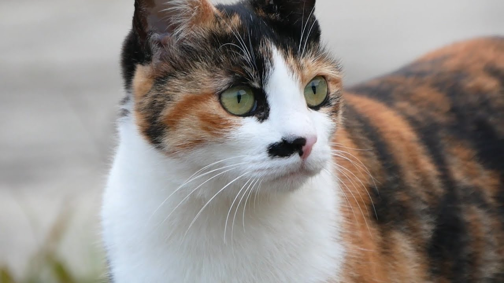

삼색이는 스트릿 출신의 고양이이다. 부드러운 삼색의 털과 눈가의 검은 아이라인이 그녀의 미모를 더욱 돋보이게 하고, 코 주변의 검은색 점은 그녀의 매력을 배로 더하니 화룡점정이라고 할 수 있다.
그녀에게는 사실 아픈 과거가 있다. 시골길을 떠돌다 양어장에 들어오게 된 그녀는 이미 그곳에 자리잡은 '어미냥'의 가족들에게 미움을 받았기 때문이다. (어미냥 입장에서는 삼색이가 영역을 침범한 것이기 때문에 그렇다.) 양어장의 주인인 '하하 하'씨가 그런 그녀를 신경 써서 챙겨주니 마음을 차츰 열어가며 길냥이임에도 불구하고 인간의 무릎에 올라오는 놀라운 모습을 자아냈다.